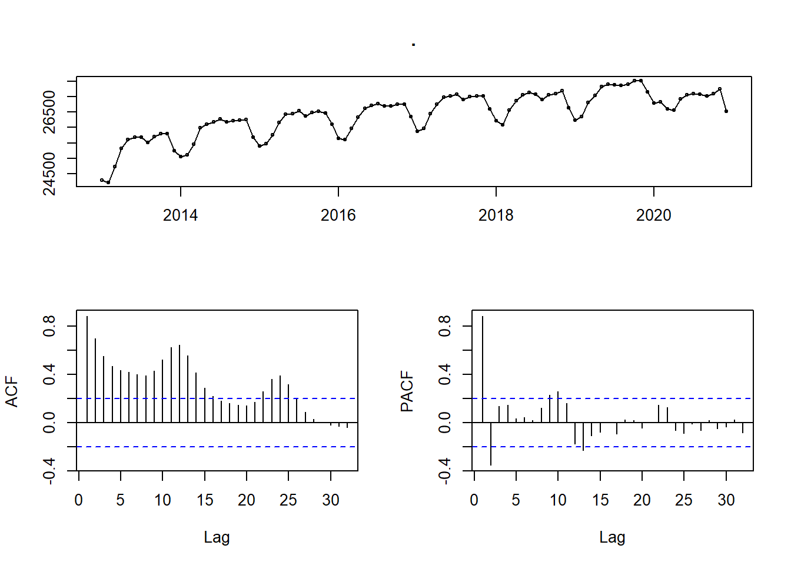

6.7 ARIMA 모델
이번에 설명하는 ARIMA 모델은 앞의 지수 평활 모델과 함께 시계열 예측 모델에서 가장 많이 사용되어온 모델이다. ARIMA는 AutoRegression Integrated Moving Average의 앞글자만 딴 이름이다. 지수 평활 모델은 주어진 데이터에서 추세와 계절성을 계량화한 모델이지만 ARIMA 모델은 이름에서도 나타나듯이 자기상관과 이동평균을 수식화한 모델이다.
사실 ARIMA 모델은 ARMA(AutoRegression Moving Average)을 기반으로 한 모델이지만 ARMA 모델은 정상성 시계열에 한한 모델이기 때문에 비정상성 데이터를 정상화하는 단계를 포함하여 ARIMA 모델로 구현된다.11
ARIMA 모델은 arima(p, d, q)로 표현되는데 p는 AR모델의 차수, d는 비정상성 시계열을 정상성 시계열로 변환하기 위한 차분 차수, q는 이동평균 차수를 의미한다. 결국 ARIMA(p, d, q)모델은 데이터를 정상성 시계열로 만들기 위해 d번 차분한 데이터에 ARMA(p, q)모델을 적용하는 것과 동일하다.
6.7.1 자기회귀모델(AutoRegressive Model)
머신러닝을 공부할 때 대부분 선형 회귀모델을 가장 먼저 배운다. 선형회귀모델은 독립변수와 종속변수를 분리하고 두 변수간의 상관관계를 분석하여 모델링을 한다. 앞선 장에서 시계열 선형회귀분석을 설명하였는데 ~를 사이에 두고 오른쪽의 독립변수는 시간이었고 왼쪽의 종속변수는 예측을 원하는 변수를 설정하였다.
그러나 AR모델은 독립변수와 종속변수가를모두 자기 자신을 사용한다는 점에서 일반 회귀모델과 다르다. 과거의 자기 자신의 데이터와 현재의 자기 자신 데이터간의 상관관계를 분석하여 회귀모델을 세우는 것이 AR 모델이다.
AR(p) 모델은 자기 상관관계가 lag p까지 영향을 미치는 모델이다. AR(1)은 자신의 데이터에 lag 1을 취한 데이터간의 회귀분석 모델이고 AR(2)는 자신의 데이터에 lag 1과 lag 2 데이터 간의 다중 회귀분석 모델이다. 따라서 AR(1) 모델은 회귀계수가 하나이고 AR(2) 모델은 회귀계수가 2개이므로 AR(p) 모델은 회귀계수가 p개 존재하게 된다.
다음의 예는 자기회귀모델을 생성하고 ploting하는 예를 보이고 있다. arima.sim() 은 tseries 패키지에서 제공하는 함수로 ARIMA 모형에 따른 랜덤 데이터를 생성하는 함수이고 auto.arima()는 forecast 패키지에서 제공하는 함수로 ARIMA 모델을 자동으로 결정해 주는 함수이다.
library(tseries)
set.seed(345)
arima100 <- arima.sim(model = list(order = c(1, 0, 0), ar = 0.9), n = 200)
arima100 %>% autoplot(main = 'AR(1) model')
urca::ur.kpss(arima100) %>% urca::summary()##
## #######################
## # KPSS Unit Root Test #
## #######################
##
## Test is of type: mu with 4 lags.
##
## Value of test-statistic is: 0.2684
##
## Critical value for a significance level of:
## 10pct 5pct 2.5pct 1pct
## critical values 0.347 0.463 0.574 0.739ndiffs(arima100, test = 'kpss')## [1] 0set.seed(345)
arima110 <- arima.sim(model = list(order = c(1, 1, 0), ar = 0.9), n = 200)
arima110 %>% autoplot(main = 'AR(1), 차분 1 model')urca::ur.kpss(arima110) %>% urca::summary()##
## #######################
## # KPSS Unit Root Test #
## #######################
##
## Test is of type: mu with 4 lags.
##
## Value of test-statistic is: 3.2912
##
## Critical value for a significance level of:
## 10pct 5pct 2.5pct 1pct
## critical values 0.347 0.463 0.574 0.739ndiffs(arima110, test = 'kpss')## [1] 1urca::ur.kpss(diff(arima110)) %>% urca::summary()##
## #######################
## # KPSS Unit Root Test #
## #######################
##
## Test is of type: mu with 4 lags.
##
## Value of test-statistic is: 0.2684
##
## Critical value for a significance level of:
## 10pct 5pct 2.5pct 1pct
## critical values 0.347 0.463 0.574 0.739ndiffs(diff(arima110), test = 'kpss')## [1] 0코드 설명
항상 동일한 랜덤 변수가 나오도록 seed를 345로 설정(
set.seed(345))arima.sim()을 사용하여 1차 AR 회귀계수가 0.9(ar = 0.9)인 ARIMA(1, 1, 0) 모델(order = c(1, 1, 0))에 적합한 데이터 200개(n = 200) 생성해서 arima110에 저장autoplot()을 사용하여 arima110을 plottingur.kpss()를 통해 정상성을 검사하는데 검정통계량이(3.2912) 5% 임계치(0.463)보다 크므로 비정상성임ndiffs()를 사용하여 arima110에 필요한 차분수를 kpss 테스트를 기반으로 산출하는데 1를 출력하므로 1차 차분이 필요1차 차분 데이터를 ur.
kpss()를 통해 정상성을 검사하는데 검정통계량이(0.2684) 5% 임계치(0.463)보다 작으므로 이미 정상성을 만족ndiffs()를 사용하여 arima110의 1차차분 데이터(diff(arima110))에 필요한 차분수를 kpss 테스트를 기반으로 산출하는데 kpss 테스트에서 이미 정상성이라고 판단하였으므로 차분이 불필요하다는 0를 출력
ARIMA(1, 0, 0)의 ACF, PACF plot은 다음과 같이 나타난다. acf plot을 보면 자기 상관성이 전반적으로 높고 천천히 감소하는 형태(Tail off)를 보인다. 그리고 pacf plot은 lag 1에서 매우 높지만 2에서부터는 끊어진다.(cut off) ARIMA(1, 1, 0)도 유사한 형태를 나타낸다.
arima100 %>% ggtsdisplay()6.7.2 이동평균 모델(Moving Average Model)
보통 우리는 데이터의 전체합을 데이터의 갯수로 나눈 것을 평균이라 한다 . 평균은 데이터 전체를 설명하는 가장 간편하고 널리 사용되는 모델이고 시계열데이터에서도 많이 사용된다.
그러나 평균은 데이터의 분포(분산)이 크고 이상치(Outlier)가 많을때는 데이터를 제대로 설명해내지 못한다. 시계열에서도 비슷한 경향이 있는데 일반 데이터와 달리 시계열 데이터에서는 장긱간의 시계열 데이터일수록 평균을 사용하여 데이터를 설명하기 힘들어진다.
예를 들어 우리나라의 1인당 GDP를 분석하고자 할 때 1960년대부터 2020년까지의 GDP를 평균을 낸다면 GDP가 낮았던 1970년대까지의 데이터로 인해 전체 평균이 최근의 GDP에 비해 낮게 나타날 것이다. 경우에 따라 이 데이터가 의미있을 수도 있지만 최근의 경향에 맞지 않은 데이터로 간주될 것이다. 따라서 이런 경우는 시계열 데이터를 최근 3년, 5년 등으로 한정하여 평균을 내는 방법을 사용한다. 이렇게 시계열 데이터에 대한 전체 평균이 아닌 특정 기간간의 평균을 지속적으로 내는 것을 이동평균이라고 한다.
이동 평균을 가장 많이 볼 수 있는 응용은 주식 plot이다. 주식 plot에서는 3일 이동평균, 5일 이동평균, 10일 이동평균등 다양한 이동평균을 통해 해당 주식 주가의 전반적인 흐름을 파악한다.
이동 평균 모델은 MA(q)로 표현하는데 q는 이동평균을 산출하는 차수를 의미한다. q가 1인 경우는 기준 시점값과 바로 이전값의 평균, 2인경우는 기준 시점값과 이전, 차이전 값과의 평균을 의미한다. 기준 시점값은 시계열 적으로 과거값으로 하나씩 이동할 수 있고 시계열 초기값까지 이동하면 이동평균 산출은 끝난다.
ARIMA모델에서도 이동평균을 사용한다. 앞에서 설명한 바와 같이 ARIMA(p, d, q)에서 q에 해당하는 값이 이동평균의 차수를 가리킨다.
ARIMA 모델에서 이동 평균을 사용할 때 주의해야 할점은 이동 평균 모델의 계수를 적용하는 독립 변수가 오차항이라는 점이다. 앞선 자기회귀모델에서는 자기회귀계수를 자기자신의 lag 차수값에 적용하였지만 이동 평균 모델은 이동평균 계수를 오차항에 적용시킨다. (이해가 어렵지만 원리를 알고싶다면 참고문헌12을 참조하라)
아래와 같이 MA(1)모델을 생성시켜 차이를 살펴보자.
set.seed(345)
arima001 <- arima.sim(model = list(order = c(0, 0, 1), ma = 0.9), n = 200) ### ARIMA(1,0,0)에 AR(1)의 회귀계수가 0.9인 데이터 200개 생성
arima001 %>% autoplot(main = 'MA(1) model')
urca::ur.kpss(arima001) %>% urca::summary() ### kpss 테스트를 통해 생성된 데이터가 정상성인지 테스트 - 0.05보다 크므로 정상성, 차분 불필요##
## #######################
## # KPSS Unit Root Test #
## #######################
##
## Test is of type: mu with 4 lags.
##
## Value of test-statistic is: 0.0906
##
## Critical value for a significance level of:
## 10pct 5pct 2.5pct 1pct
## critical values 0.347 0.463 0.574 0.739ndiffs(arima001, test = 'kpss') ### 비정상 제거를 위한 차분수 - 0이 나오므로 차분 불필요## [1] 0코드 설명
항상 동일한 랜덤 변수가 나오도록 seed를 345로 설정(
set.seed(345))arima.sim()을 사용하여 1차 MA 회귀계수가 0.9(ma = 0.9)인 ARIMA(0, 0, 1) 모델(order = c(0, 0, 1))에 적합한 데이터 200개(n = 200) 생성해서 arima001에 저장autoplot()을 사용하여 arima001을 plottingur.kpss()를 통해 정상성을 검사하는데 검정통계량이(0.0906) 5% 임계치(0.463)보다 작으므로 정상성임ndiffs()를 사용하여 arima001에 필요한 차분수를 kpss 테스트를 기반으로 산출하는데 0를 출력하므로 1차 차분이 불필요
set.seed(345)
arima011 <- arima.sim(model = list(order = c(0, 1, 1), ma = 0.9), n = 200)
arima011 %>% autoplot(main = 'MA(1), 차분 1 model')urca::ur.kpss(arima011) %>% urca::summary() ### kpss 테스트를 통해 생성된 데이터가 정상성인지 테스트 - 0.05보다 작으므로 정상성, 차분 필요##
## #######################
## # KPSS Unit Root Test #
## #######################
##
## Test is of type: mu with 4 lags.
##
## Value of test-statistic is: 3.5785
##
## Critical value for a significance level of:
## 10pct 5pct 2.5pct 1pct
## critical values 0.347 0.463 0.574 0.739ndiffs(arima011, test = 'kpss') ### 비정상성을 제거하기 위해 필요한 차분수## [1] 1urca::ur.kpss(diff(arima011)) %>% urca::summary()##
## #######################
## # KPSS Unit Root Test #
## #######################
##
## Test is of type: mu with 4 lags.
##
## Value of test-statistic is: 0.0906
##
## Critical value for a significance level of:
## 10pct 5pct 2.5pct 1pct
## critical values 0.347 0.463 0.574 0.739ndiffs(diff(arima011), test = 'kpss')## [1] 0코드 설명
항상 동일한 랜덤 변수가 나오도록 seed를 345로 설정(
set.seed(345))arima.sim()을 사용하여 1차 MA 회귀계수가 0.9(ma = 0.9)인 ARIMA(0, 1, 1) 모델(order = c(0, 1, 1))에 적합한 데이터 200개(n = 200) 생성해서 arima011에 저장autoplot()을 사용하여 arima011을 plottingur.kpss()를 통해 정상성을 검사하는데 검정통계량이(3.5785) 5% 임계치(0.463)보다 크므로 비정상성임ndiffs()를 사용하여 arima011에 필요한 차분수를 kpss 테스트를 기반으로 산출하는데 1를 출력하므로 1차 차분이 필요1차 차분 데이터를
ur.kpss()를 통해 정상성을 검사하는데 검정통계량이(0.0906) 5% 임계치(0.463)보다 작으므로 이미 정상성을 만족ndiffs()를 사용하여 arima011의 1차차분 데이터(diff(arima011))에 필요한 차분수를 kpss 테스트를 기반으로 산출하는데 kpss 테스트에서 이미 정상성이라고 판단하였으므로 차분이 불필요하다는 0를 출력
ARIMA(0, 0, 1)의 ACF, PACF plot은 다음과 같이 나타난다. AR(1)모델의 acf는 점차 감소(tail off)하였고 pacf는 1에서 절단(cut off)되었지만 MA(1)모델에서는 acf plot이 1에서 절단(cut off)되고 pacf plot은 +와 -를 반복하지만 전반적으로 감소(tail off)하고 있다.
arima001 %>% ggtsdisplay()
6.7.3 ARIMA 모델 결정
ARIMA 모델을 사용하기 위해서는 p, d, q의 차수를 결정하는 것이 매우 중요하다. 차수를 결정하는 방법은 앞서 설명한 acf, pacf를 보고 판단할 수 있는데 forecast 패키지의 auto.arima() 함수에서는 자동으로 p, d, q의 차수를 결정해주기 때문에 편리사게 사용할 수 있다.
하지만 ARIMA 모델의 전반적인 동작을 이해하기 위해서는 acf와 pacf를 확인하여 모델을 결정하는 방법을 알아둘 필요가 있다. 우선 간략하게 ARIMA 모델을 결정하는 방법을 설명하자면 다음과 같다.
차분을 통한 정상화
ur.kpss()를 사용하여 검정통계량이 5% 임계치보다 크면 비정상으로ndiffs()를 사용하여 차분수를 구함ur.kpss()의 검정통계량이 5% 임계치보다 작을때까지 a를 반복
ACF, PACF를 확인
ACF가 점차 감소이고 PACF의 p차에서 절단값이 있다면 AR(p)
PACF가 점차 감소이고 ACF가 q차에서 절단값이 있다면 MA(q)
ACF와 PACF가 모두 점차감소라면 ARMA 모델(육안으로는 선택이 어려움)
잔차를 확인
- 각 시차의 잔차 Ljung-box 테스트 값이 임계치 이상이어서 정상성을 만족하는지 확인
6.7.3.1 차분을 통한 정상화
앞에서 설명했다시피 ARIMA모델은 비정상 데이터를 정상화로 만들기 위해 d 차분한 데이터에 ARMA(p, q)를 적용한 것과 같다고 했다. 따라서 ARIMA 모델을 만들기 위해서는 먼저 정상데이터이지를 검사하고 비정상일 경우 차분을 통해 정상데이터로 만들어야 한다. 이 과정은 앞의 예제에서 ur.kpss()와 ndiffs()를 이용하는 방법을 설명했다.
6.7.3.2 ACF, PACF 확인
앞의 예제에서 AR(1)과 MA(1)의 ACF와 PACF plot을 보았는데 두 경우가 비슷하지만 다른 특성이 있다. AR(1) 모델의 경우는 ACF plot이 점차 감소(tail off)하고 PACF plot의 절단(cut off) 차수가 1이었다. 반면 MA(1)의 경우는 ACF plot의 절단(cut off) 차수가 1이었고 PACF plot이 점차 감소(tail off)하였다. 이를 정리하면 다음의 표와 같이 나타낼 수 있다.
| AR(p) | MA(q) | ARMA(p, q) | |
|---|---|---|---|
| ACF | 점차 감소(tail off) | q차에서 절단(cut off) | 점차 감소(tail off) |
| PACF | p차에서 절단(cut off) | 점차 감소(tail off) | 점차 감소(tail off) |
위의 표에서 보듯이 AR모델은 ACF plot이 점차 감소하며 PACF plot의 절단 차수가 p일때 AR(p)모델로 결정되고, MA 모델은 PACF plot이 점차 감소하며 ACF plot의 절단 차수가 q일때 MA(q)로 결정한다. 만약 AR과 MA가 동시에 나타나는 모델의 경우는 다음의 예에서 보듯이 ACF와 PACF가 모두 점차 감소하는 형태를 보인다.
set.seed(345)
arima101 <- arima.sim(model = list(order = c(1, 0, 1), ar = 0.9, ma = 0.9), n = 200) ### ARIMA(1,0,0)에 AR(1)의 회귀계수가 0.9인 데이터 200개 생성
arima101 %>% autoplot(main = 'AR(1), MA(1) model')
arima101 %>% ggtsdisplay()
위의 예와 같이 p와 q가 모두 0보다 큰 경우는 ACF와 PACF plot으로 모델을 결정하는 것이 적절하지 않을 수 있다.13 이 경우에는 여러가지 경우수를 설정하고 AIC, BIC, RMSE 등의 성능 분석 수치를 통해 가장 좋은 모델을 선정해야 한다. 이와 관련된 내용은 다음 장에서 다루겠다.
6.7.3.3 잔차 확인
ARIMA 모형에 적용할 차수를 모두 결정한 후에는 결정한 모델을 통해 생성된 잔차가 백색 잡음인지를 확인해야 한다.
백색 잡음인지를 검사하는 방법으로 자기상관관계를 사용한 Ljung-box test와 단위근 검정을 통한 KPSS test를 소개하였다. ARIMA모델을 결정하기 위해 가장 먼저 했던 작업이 KPSS test를 통한 단위근 검정이었기 때문에 이미 단위근 검정은 시행했다. 따라서 모델이 생성한 잔차가 백색잡음인지를 검사하기 위해서는 자기 상관관계를 활용해 백색잡음 여부를 판단하는 Ljung-box test를 추가로 시행한다. ARIMA 모델의 잔차를 검사할 때는 astsa 패키지에서 제공하는 sarima()를 사용하면 편리하다.
library(astsa)
sarima(arima101, p = 1, d = 0, q = 1)## initial value 1.359489
## iter 2 value -0.018418
## iter 3 value -0.028037
## iter 4 value -0.028204
## iter 5 value -0.028466
## iter 6 value -0.028483
## iter 7 value -0.028509
## iter 8 value -0.028558
## iter 9 value -0.028579
## iter 10 value -0.028582
## iter 11 value -0.028593
## iter 12 value -0.028606
## iter 13 value -0.028620
## iter 14 value -0.028666
## iter 15 value -0.028698
## iter 16 value -0.028709
## iter 17 value -0.028710
## iter 18 value -0.028710
## iter 19 value -0.028711
## iter 20 value -0.028713
## iter 21 value -0.028715
## iter 22 value -0.028717
## iter 23 value -0.028717
## iter 24 value -0.028717
## iter 25 value -0.028717
## iter 26 value -0.028717
## iter 27 value -0.028717
## iter 28 value -0.028717
## iter 29 value -0.028717
## iter 29 value -0.028717
## final value -0.028717
## converged
## initial value -0.024032
## iter 2 value -0.024200
## iter 3 value -0.024313
## iter 4 value -0.024363
## iter 5 value -0.024425
## iter 6 value -0.024425
## iter 7 value -0.024425
## iter 8 value -0.024425
## iter 9 value -0.024425
## iter 10 value -0.024425
## iter 11 value -0.024425
## iter 12 value -0.024425
## iter 13 value -0.024425
## iter 14 value -0.024426
## iter 15 value -0.024426
## iter 15 value -0.024426
## final value -0.024426
## converged## $fit
##
## Call:
## stats::arima(x = xdata, order = c(p, d, q), seasonal = list(order = c(P, D,
## Q), period = S), xreg = xmean, include.mean = FALSE, transform.pars = trans,
## fixed = fixed, optim.control = list(trace = trc, REPORT = 1, reltol = tol))
##
## Coefficients:
## ar1 ma1 xmean
## 0.8943 0.8966 -2.4748
## s.e. 0.0320 0.0399 1.1803
##
## sigma^2 estimated as 0.9315: log likelihood = -278.9, aic = 565.81
##
## $degrees_of_freedom
## [1] 197
##
## $ttable
## Estimate SE t.value p.value
## ar1 0.8943 0.0320 27.9324 0.0000
## ma1 0.8966 0.0399 22.4571 0.0000
## xmean -2.4748 1.1803 -2.0968 0.0373
##
## $AIC
## [1] 2.829026
##
## $AICc
## [1] 2.829638
##
## $BIC
## [1] 2.894992위 plot의 가장 위의 표준화 잔차 plot(Standardized Residuals)은 잔차의 분포를 보여준다. 전반적으로 평균 0의 레벨에서 분산이 크게 벗어나고 있지 않음을 볼 수 있다.
두번째 열의 왼쪽 잔차의 ACF plot을 보면 잔차의 자기 상관이 거의 없음이 나타난다. 오른쪽의 Q-Q plot은 잔차가 정규분포를 하는지를 보여주는 plot인데 정규분포 데이터일수록 대각선에 포인트들이 몰려있게 된다. 양쪽 끝단의 데이터는 큰 의미가 없다. Q-Q plot을 볼 때도 정규분포에서 크게 벗어나지 않는 것으로 보인다.
마지막으로 Ljung-Box의 p-value plot이 보이는데 모든 lag의 p-value가 95%임계선 위쪽으로 나타나야 백색 잡음으로 간주할 수 있는데 여기서는 모두 95% 임계선 위에 있으므로 모든 조건이 백색잡음을 만족한다.
6.7.3.4 ARIMA 모델 실습
ARIMA 모델을 학생수 시계열 데이터, 취업자수 시계열 데이터, 코로나 확진자 시계열 데이터에 적용해보면 다음과 같다. 앞서 설명한 바와 같이 forecast 패키지에서는 ARIMA모델을 자동으로 결정해주는 함수인 auto.arima()를 제공한다.
학생수 데이터를 ARIMA 모델에 적용하면 ACF와 PACF로 비교적 확실하게 확인이 가능한 모델을 선정할 수 있다.
students.ts[,2] %>% ggtsdisplay()
urca::ur.kpss(students.ts[,2]) %>% urca::summary()##
## #######################
## # KPSS Unit Root Test #
## #######################
##
## Test is of type: mu with 2 lags.
##
## Value of test-statistic is: 0.7939
##
## Critical value for a significance level of:
## 10pct 5pct 2.5pct 1pct
## critical values 0.347 0.463 0.574 0.739ndiffs(students.ts[,2], test = 'kpss')## [1] 2sarima(students.ts[,2], p = 1, d = 2, q = 0)## initial value 10.520394
## iter 2 value 10.438482
## iter 3 value 10.437906
## iter 4 value 10.437883
## iter 4 value 10.437883
## final value 10.437883
## converged
## initial value 10.416785
## iter 2 value 10.416539
## iter 3 value 10.416530
## iter 3 value 10.416530
## iter 3 value 10.416530
## final value 10.416530
## converged
## $fit
##
## Call:
## stats::arima(x = xdata, order = c(p, d, q), seasonal = list(order = c(P, D,
## Q), period = S), include.mean = !no.constant, transform.pars = trans, fixed = fixed,
## optim.control = list(trace = trc, REPORT = 1, reltol = tol))
##
## Coefficients:
## ar1
## 0.3861
## s.e. 0.2075
##
## sigma^2 estimated as 1.107e+09: log likelihood = -236.71, aic = 477.42
##
## $degrees_of_freedom
## [1] 19
##
## $ttable
## Estimate SE t.value p.value
## ar1 0.3861 0.2075 1.8609 0.0783
##
## $AIC
## [1] 23.87094
##
## $AICc
## [1] 23.88205
##
## $BIC
## [1] 23.97051auto.arima(students.ts[,2])## Series: students.ts[, 2]
## ARIMA(1,2,0)
##
## Coefficients:
## ar1
## 0.3861
## s.e. 0.2075
##
## sigma^2 estimated as 1.174e+09: log likelihood=-236.71
## AIC=477.42 AICc=478.12 BIC=479.41auto.arima(students.ts[,2]) %>% forecast() %>%
autoplot() +
labs(x = '연도', y = '학생수')코드 설명
ACF가 점차 감소(tail off)하고 PACF가 lag 1에서 절단(cut off)되었으므로 AR(1) 모델로 결정할 수 있음
KPSS 테스트결과 검정통계량이 95% 임계치보다 크기 때문에 차분이 필요함.
ndiffs()를 사용해 적정 차분수를 알아봄. 결과가 2로 나와 2차 차분이 필요sarima()로 확인한 잔차의 Ljung-box의 p-value는 모두 임계치보다 크므로 잔차는 백색잡음으로 볼 수 있음
auto.arima()를 사용하여 결정된 ARIMA 모형도 ARIMA(1, 2, 0)이며 1차 AR계수는 0.3861로 계산됨
auto.arima() 모델을 forecast()를 사용하여 예측치를 생성하고 autoplot()으로 plot 생성
전체 취업자 수는 계절성을 지니기 때문에 계절성 ARIMA를 사용하여야 한다. 다음의 절에서 설명한다.
코로나 확진자 데이터의 자동 ARIMA 모형은 (2, 1, 1)로 나타난다. kpss test와 ndiffs를 통해 차분이 1인 경우 정상성이 되는 것을 확인할 수 있으나 p, q값이 모두 0보다 큰 수이기 때문에 ACF와 PACF plot으로 차수를 결정하는 것이 쉽지 않다. 또한 ARIMA(2, 1, 1)을 통한 잔차의 결과도 Ljung-box 결과가 모두 95% 임계치보다 큰 것이 아니기 때문에 백색잡음이라고 단정할 수 없다. 이럴 경우는 p값과 q값의 주위값들에 대한 ARIMA모델들을 확인하여 결정하는 것이 좋다. auto.arima()는 AIC값이 작은 값을 모델로 선택한다. AIC(Akaike’s Information Criterion)는 모델의 품질을 결정할 때 참고하는 값이다. 일반적으로 과대적합(Overfitting) 또는 과소적합(Underfitting)되는 모델은 효율적이지 않다고 평가한다. 결국 AIC가 높을수록 모형의 적합도가 떨어진다는 것을 의미한다. 여기서 주의해야할 것은 AIC는 모델의 성능을 평가하는 지수가 아닌 모델의 적합도를 평가하는 지수라는 것이다.
urca::ur.kpss(covid19.ts[,2]) %>% urca::summary()##
## #######################
## # KPSS Unit Root Test #
## #######################
##
## Test is of type: mu with 5 lags.
##
## Value of test-statistic is: 3.2656
##
## Critical value for a significance level of:
## 10pct 5pct 2.5pct 1pct
## critical values 0.347 0.463 0.574 0.739ndiffs(covid19.ts[,2], test = 'kpss') ### 비정상성을 제거하기 위해 필요한 차분수가 1## [1] 1diff(covid19.ts[,2]) %>% ggtsdisplay() ### ACF, PACF 모두 절단(Cut off)이므로 ARMA(p, q) 모델 
auto.arima(covid19.ts[,2]) ### 0-9세 코로나 확진자수의 ARIMA모형은 ARIMA(2, 1, 1)으로 선정됨## Series: covid19.ts[, 2]
## ARIMA(2,1,1)
##
## Coefficients:
## ar1 ar2 ma1
## 0.1126 -0.1775 -0.6535
## s.e. 0.0868 0.0688 0.0726
##
## sigma^2 estimated as 26.74: log likelihood=-920.47
## AIC=1848.93 AICc=1849.07 BIC=1863.76sarima(covid19.ts[,2], 2, 1, 1)## initial value 1.793862
## iter 2 value 1.678611
## iter 3 value 1.660151
## iter 4 value 1.655522
## iter 5 value 1.643145
## iter 6 value 1.641880
## iter 7 value 1.641239
## iter 8 value 1.640877
## iter 9 value 1.640615
## iter 10 value 1.640567
## iter 11 value 1.640564
## iter 12 value 1.640564
## iter 13 value 1.640564
## iter 13 value 1.640564
## iter 13 value 1.640564
## final value 1.640564
## converged
## initial value 1.638392
## iter 2 value 1.638388
## iter 3 value 1.638387
## iter 4 value 1.638387
## iter 5 value 1.638387
## iter 5 value 1.638387
## iter 5 value 1.638387
## final value 1.638387
## converged## $fit
##
## Call:
## stats::arima(x = xdata, order = c(p, d, q), seasonal = list(order = c(P, D,
## Q), period = S), xreg = constant, transform.pars = trans, fixed = fixed,
## optim.control = list(trace = trc, REPORT = 1, reltol = tol))
##
## Coefficients:
## ar1 ar2 ma1 constant
## 0.1150 -0.1768 -0.6576 0.0631
## s.e. 0.0866 0.0688 0.0723 0.0963
##
## sigma^2 estimated as 26.43: log likelihood = -920.25, aic = 1850.51
##
## $degrees_of_freedom
## [1] 297
##
## $ttable
## Estimate SE t.value p.value
## ar1 0.1150 0.0866 1.3287 0.1850
## ar2 -0.1768 0.0688 -2.5694 0.0107
## ma1 -0.6576 0.0723 -9.0980 0.0000
## constant 0.0631 0.0963 0.6552 0.5128
##
## $AIC
## [1] 6.147873
##
## $AICc
## [1] 6.148322
##
## $BIC
## [1] 6.2094536.7.4 Seasonal ARIMA 모델
위에서 살펴본 모델은 비계절성 ARIMA 모델이었다. 계절성을 지니는 데이터는 ARIMA 모델로는 적절히 모델링이 어렵기 때문에 계절성 ARIMA 모델에 적합시켜야 한다. 계절성 ARIMA는 비계절성 ARIMA의 p, d, q 차수 외에 계절성 차수인 P, D, Q와 관측주기 m을 추가적으로 결정해야 하고 ARIMA(p, d, q)(P, D, Q)m으로 표기한다. 아래의 코드는 전체 취업자수 주기별 합계의 계절성 ARIMA 모델을 산출하는 코드이다. 계절성의 주기가 클수록 ACF와 PACF로 계절성 ARIMA차수를 찾아내는게 어려워지기 때문에 좀 간단한 예로 연습해보자.
### 전체 취업자수 데이터를 분기별 합계제이터로 변환
employees %>% mutate(year = lubridate::year(time),
qtr = lubridate::quarter(time)) %>%
group_by(year, qtr) %>%
summarise(sum = sum(total)) %>%
ts(frequency = 4, start = c(2013,1)) -> qtr.employees.ts## `summarise()` regrouping output by 'year' (override with `.groups` argument)### auto.arima로 일단 ARIMA모형을 검토 - ARIMA(0,1,0)(0,1,0)[4]로 제안됨
auto.arima(qtr.employees.ts[,3]) %>% summary()## Series: qtr.employees.ts[, 3]
## ARIMA(0,1,0)(0,1,0)[4]
##
## sigma^2 estimated as 240342: log likelihood=-205.52
## AIC=413.04 AICc=413.2 BIC=414.33
##
## Training set error measures:
## ME RMSE MAE MPE MAPE MASE ACF1
## Training set -119.056 450.3206 266.8772 -0.1506314 0.3348234 0.2848644 0.02400751### ggtsdisplay()로 ACF plot을 볼때 4주기마다 계절성이 있는듯 보임
qtr.employees.ts[,3] %>% tsdisplay()### KPSS 검정결과 단위근이 존재하는 비정상성 데이터
qtr.employees.ts[,3] %>% urca::ur.kpss() %>% urca::summary()##
## #######################
## # KPSS Unit Root Test #
## #######################
##
## Test is of type: mu with 3 lags.
##
## Value of test-statistic is: 0.8663
##
## Critical value for a significance level of:
## 10pct 5pct 2.5pct 1pct
## critical values 0.347 0.463 0.574 0.739### ndiffs()에 의하면 1차 차분 필요
qtr.employees.ts[,3] %>% ndiffs()## [1] 1### 1차 차분 결과 plot()
qtr.employees.ts[,3] %>% diff() %>% tsdisplay(lag.max = 36)1차 차분된 데이터의 ACF와 PACF를 확인해보면 비계절성 lag(1, 2, 3 등)는 대부분 임계치 아래로 내려가 있기 때문에 ARMA(0,0)으로 결정이 가능하다. 그런데 위의 ACF와 PACF는 앞에서 본 plot과는 좀 다른 점이 있는데 ACF의 선이 4주기별로 점차 감소하는 형태를 보이고 있다는 점이다. 이것을 보고 계절성 ARIMA모형을 결정할 수 있는데 위에서는 ACF에서 4주기별로 점차 감소하고 PACF에서는 lag 4에서 절단 되기때문에 ARMA(1, 0)[4]로 볼 수 있다. 따라서 ACF, PACF를 보고 결정할 수 있는 계절성 ARIMA 모형은 ARIMA(0,1,0)(1,1,0)[4]이다.
### 잔차의 분포, ACF, Q-Q plot, Ljung-box test 모두 백색잡음으로 나타남
sarima(qtr.employees.ts[,3], p = 0, d = 1, q = 0, P = 1, D = 1, Q = 0, S = 4)## initial value 6.201317
## iter 2 value 6.192952
## iter 3 value 6.185212
## iter 4 value 6.185187
## iter 4 value 6.185187
## final value 6.185187
## converged
## initial value 6.179834
## iter 2 value 6.179786
## iter 3 value 6.179732
## iter 3 value 6.179732
## iter 3 value 6.179732
## final value 6.179732
## converged## $fit
##
## Call:
## stats::arima(x = xdata, order = c(p, d, q), seasonal = list(order = c(P, D,
## Q), period = S), include.mean = !no.constant, transform.pars = trans, fixed = fixed,
## optim.control = list(trace = trc, REPORT = 1, reltol = tol))
##
## Coefficients:
## sar1
## -0.2955
## s.e. 0.3359
##
## sigma^2 estimated as 230020: log likelihood = -205.16, aic = 414.33
##
## $degrees_of_freedom
## [1] 26
##
## $ttable
## Estimate SE t.value p.value
## sar1 -0.2955 0.3359 -0.8799 0.387
##
## $AIC
## [1] 13.81094
##
## $AICc
## [1] 13.8157
##
## $BIC
## [1] 13.89733sarima(qtr.employees.ts[,3], p = 0, d = 1, q = 0, P = 0, D = 1, Q = 0, S = 4)
## $fit
##
## Call:
## stats::arima(x = xdata, order = c(p, d, q), seasonal = list(order = c(P, D,
## Q), period = S), include.mean = !no.constant, transform.pars = trans, fixed = fixed,
## optim.control = list(trace = trc, REPORT = 1, reltol = tol))
##
##
## sigma^2 estimated as 239349: log likelihood = -205.52, aic = 413.04
##
## $degrees_of_freedom
## [1] 27
##
## $ttable
## Estimate p.value
##
## $AIC
## [1] 13.76787
##
## $AICc
## [1] 13.76787
##
## $BIC
## [1] 13.81106위의 두개의 plot은 ACF, PACF를 통해 결정한 모델과 auto.arima()를 통해 결정된 모델의 잔차 정보 plot이다. 두 모델 모두 잔차를 백색잡음으로 볼 수 있을것으로 보인다. 아래는 위에서 선택한 모델을 Arima()를 사용해 생성하고 두 모델의 미래 예측치를 만들어 plotting하였다.
그럼 auto.arima()가 결정한 ARIMA(0,1,0)(0,1,0)[4]모델과 수작업으로 결정한 ARIMA(0,1,0)(1,1,0)을 비교해보자. 모델을 비교하는 데에는 몇가지 방법이 있고 다음장에서 비교하는 지수에 대해 자세히 설명하겠다.
auto.arima()에서는 모델을 선택하는데 사용하는 지수로 AIC를 사용한다고 하였다. ARIMA 모델 차수 간의 비교에는 AIC가 유용한 판단 지수이지만 다른 전혀 다른 모델과 비교할 때는 잔차에 관련된 성능지수를 사용하는 것이 일반적이다. 따라서 모델간의 성능 비교에서 많이 사용하는 RMSE 지수를 사용하여 비교해 보았다.(RMSE는 다음장에서 상세히 설명한다. 일단 낮은 값이 좋은 값이다.)
수작업으로 선택한 ARIMA(0,1,0)(1,1,0)[4] 모델의 RMSE는 441.4946이고 auto.arima()로 선택된 ARIMA(0,1,0)(0,1,0)[4] 모델의 RMSE는 450.3206으로 산출되었다. RMSE상으로는 수작업으로 선택한 모델이 auto.arima() 선택 모델보다 우수해보인다. 아래 plot으로 두 모델을 확인해보자. 이제 선택은 여러분의 몫이다.
### ARIMA(0,1,0)(0,1,1)[12] 모델 생성
arima010110 <- Arima(qtr.employees.ts[,3], order = c(0,1,0), seasonal = c(1,1,0))
arima010010 <- Arima(qtr.employees.ts[,3], order = c(0,1,0), seasonal = c(0,1,0))
### ARIMA(0,1,0)(0,1,0)[12]모델의 회귀계수 및 다양한 정보
summary(arima010110) ## Series: qtr.employees.ts[, 3]
## ARIMA(0,1,0)(1,1,0)[4]
##
## Coefficients:
## sar1
## -0.2955
## s.e. 0.3359
##
## sigma^2 estimated as 239898: log likelihood=-205.16
## AIC=414.33 AICc=414.83 BIC=416.92
##
## Training set error measures:
## ME RMSE MAE MPE MAPE MASE ACF1
## Training set -127.5149 441.4946 260.5119 -0.1615043 0.3268788 0.27807 -0.05923251summary(arima010010) ## Series: qtr.employees.ts[, 3]
## ARIMA(0,1,0)(0,1,0)[4]
##
## sigma^2 estimated as 240342: log likelihood=-205.52
## AIC=413.04 AICc=413.2 BIC=414.33
##
## Training set error measures:
## ME RMSE MAE MPE MAPE MASE ACF1
## Training set -119.056 450.3206 266.8772 -0.1506314 0.3348234 0.2848644 0.02400751### ARIMA(0,1,0)(0,1,1)[12] 모델의 예측치 산출
forecast010110 <- arima010110 %>% forecast()
forecast010010 <- arima010010 %>% forecast()
### ARIMA(0,1,0)(0,1,1)[12]의 plot
autoplot(qtr.employees.ts[,3]) +
autolayer(forecast010110, PI = F, series = '010110') +
autolayer(forecast010010, PI = F, series = '010010') +
labs(title = '분기별 취업자수에 대한 ARIMA(0,1,0)(0,1,0)[4]와 ARIMA(0,1,0)(1,1,0)[4]', x = '연도', y = '취업자수', color = '모델')그러면 이제 좀 취업자수의 월별 데이터로 확인해보자.
### auto.arima()는 ARIMA(0,1,0)(0,1,1)[12] 모델 제안
employees.ts[,2] %>% auto.arima()## Series: .
## ARIMA(0,1,0)(0,1,1)[12]
##
## Coefficients:
## sma1
## -0.4246
## s.e. 0.1648
##
## sigma^2 estimated as 15320: log likelihood=-518.14
## AIC=1040.27 AICc=1040.42 BIC=1045.11### ggtsdisplay()로 ACF plot을 볼때 12주기마다 계절성이 있는듯 보임
employees.ts[,2] %>% tsdisplay()### KPSS 검정결과 단위근이 존재하는 비정상성 데이터
employees.ts[,2] %>% urca::ur.kpss() %>% urca::summary()##
## #######################
## # KPSS Unit Root Test #
## #######################
##
## Test is of type: mu with 3 lags.
##
## Value of test-statistic is: 1.9226
##
## Critical value for a significance level of:
## 10pct 5pct 2.5pct 1pct
## critical values 0.347 0.463 0.574 0.739### ndiffs()에 의하면 1차 차분 필요
employees.ts[,2] %>% ndiffs()## [1] 1### 1차 차분 결과 plot()
### ACF, PACF를 확인해서 비계절성 모델은 (0,1,1) 계절성 모델은 (1,1,0)으로 결정
employees.ts[,2] %>% diff() %>% tsdisplay(lag.max = 36)### ARIMA(0,1,1)(1,1,0)[12]모델 생성
arima011110 <- employees.ts[,2] %>% Arima(order = c(0,1,1), seasonal = c(1,1,0))
### auto.arima()가 제안한 ARIMA(0,1,0)(0,1,1)[12]모델 생성
arima010011 <- employees.ts[,2] %>% Arima(order = c(0,1,0), seasonal = c(0,1,1))
### 각 모델의 정보 확인
summary(arima011110) ## Series: .
## ARIMA(0,1,1)(1,1,0)[12]
##
## Coefficients:
## ma1 sar1
## 0.0087 -0.3649
## s.e. 0.1385 0.1395
##
## sigma^2 estimated as 15667: log likelihood=-518.22
## AIC=1042.45 AICc=1042.75 BIC=1049.7
##
## Training set error measures:
## ME RMSE MAE MPE MAPE MASE ACF1
## Training set -15.58899 114.974 74.83796 -0.05996543 0.2828592 0.2361174 -0.02801497summary(arima010011) ## Series: .
## ARIMA(0,1,0)(0,1,1)[12]
##
## Coefficients:
## sma1
## -0.4246
## s.e. 0.1648
##
## sigma^2 estimated as 15320: log likelihood=-518.14
## AIC=1040.27 AICc=1040.42 BIC=1045.11
##
## Training set error measures:
## ME RMSE MAE MPE MAPE MASE ACF1
## Training set -17.24831 114.3934 73.75538 -0.06622242 0.2787589 0.2327018 -0.01264952### 두 모델의 예측치 산출
forecast011110 <- arima011110 %>% forecast()
forecast010011 <- arima010011 %>% forecast()
### 두 모델의 plot
autoplot(employees.ts[,2]) +
autolayer(forecast011110, PI = F, series = '011110') +
autolayer(forecast010011, PI = F, series = '010011') +
labs(title = '월별 취업자수에 대한 ARIMA(0,1,1)(1,1,0)[12]와 ARIMA(0,1,0)(0,1,1)[12]', x = '연도', y = '취업자수', color = '모델')위의 auto.arima()가 결정한 ARIMA(0,1,0)(0,1,1)[12]모델과 수작업으로 결정한 ARIMA(0,1,1)(1,1,0)을 비교해보자. auto.plot()의 ARIMA(0,1,0)(0,1,1)[12]모델의 RMSE값은 114.39이고 수작업으로 결정한 ARIMA(0,1,1)(1,1,0)의 RMSE값은 114.97이다. 일반적으로 RMSE값이 작은 모델이 성능이 좋은 모델인데 이 두 모델의 중에 성능이 좋은 모델은 auto.arima()의 ARIMA(0,1,0)(0,1,1)[12]모델이다. 또 아래의 표는 ARIMA(0,1,0)(0,1,1)모델 부근의 모델들의 RMSE값이다.
| 모델차수 | RMSE |
|---|---|
| ARIMA(0,1,0)(0,1,1) | 114.39 |
| ARIMA(0,1,0)(0,1,0) | 120.51 |
| ARIMA(0,1,0)(1,1,1) | 120.41 |
| ARIMA(0,1,0)(0,1,0) | 120.51 |
| ARIMA(1,1,0)(0,1,1) | 114.35 |
| ARIMA(1,1,0)(0,1,0) | 120.51 |
| ARIMA(1,1,0)(1,1,0) | 114.97 |
| ARIMA(1,1,0)(0,1,0) | 120.51 |
| ARIMA(0,1,1)(0,1,1) | 114.32 |
| ARIMA(0,1,1)(0,1,0) | 120.51 |
| ARIMA(0,1,1)(1,1,1) | 114.32 |
| ARIMA(0,1,1)(0,1,0) | 120.51 |
| ARIMA(1,1,1)(0,1,1) | 113.23 |
| ARIMA(1,1,1)(0,1,0) | 117.42 |
| ARIMA(1,1,1)(1,1,1) | 113.23 |
| ARIMA(1,1,1)(0,1,0) | 117.42 |
auto.arima()와 수동으로 선택한 모델인 ARIMA(0,1,0)(0,1,1)[12]의 RMSE보다 낮은 RMSE값을 갖는 모델이 눈에 보인다. 그렇다면 이 모델이 더 좋은 모델인가? ARIMA(0,1,1)(1,1,1)모델은 잔차의 Ljung-Box 테스트에서 lag 1의 p-value가 임계치보다 낮아 잔차의 정상성을 확보하지 못한다. 다음의 plot은 auto.arima()가 선택한 RMSE보다 낮은 모델의 예측치 plot이다.

위의 plot을 보면 예측치가 미세하게 차이난다. 어떻게 보면 큰 차이가 아닐수도 있고 어찌보면 auto.plot()의 예측력이 떨어진다고 볼수도 있다. 따라서 육안으로 확인하거나 auto.arima 모델의 p, q값의 주위 모델을 반드시 확인하여 성능 수치가 더 우수한 모델을 찾는 과정을 거쳐야 한다.
코드 설명
항상 동일한 랜덤 변수가 나오도록 seed를 345로 설정(
set.seed(345))arima.sim()을 사용하여 1차 AR 회귀계수가 09(ar = 0.9)인 ARIMA(1, 0, 0) 모델(order = c(1, 0, 0))에 적합한 데이터 200개(n = 200) 생성해서 arima100에 저장autoplot()을 사용하여 arima100을 plottingkpss.test()를 통해 정상성을 검사하는데 검정통계량이(0.2684)가 5% 임계치(0.463)보다 작으므로 이미 정상성을 만족ndiffs()를 사용하여 arima100에 필요한 차분수를 kpss 테스트를 기반으로 산출하는데 kpss 테스트에서 이미 정상성이라고 판단하였으므로 차분이 불필요하다는 0를 출력